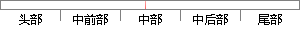

这里采用顺序查找的算法虽然比较简单，但并不是最优。
片段位置图

相似结果
相似片段：2.1 数据结构查找算法的理论基础 2.1.1 顺序组织...在查询特定点上并不是最优的,因此本文针对这个问题...因此其读取操作比较简单, Visualc++中MFC之所以为...
| 标题 | 《点云多视图拼合研究与设计》 |
| 对比库 | 中国学位论文全文数据库 |
| 作者 | 李必卿 |
| 机构 | 西南科技大学 |
| 分类 | 计算机应用技术 |
| 年份 | 2009 |
| 相似率 | 71.43% （轻度抄袭） |
※ 片段修改建议 ※
近似词参考：- 虽然：固然 尽管
- 顺序：挨次 按次 递次 次序
- 并不是：并非
- 采用：采取 接纳 采纳
系统自动生成语句： 这里采取挨次查找的算法固然比较简单，但并非最优。
注：本片段修改建议为系统自动生成，仅供参考。